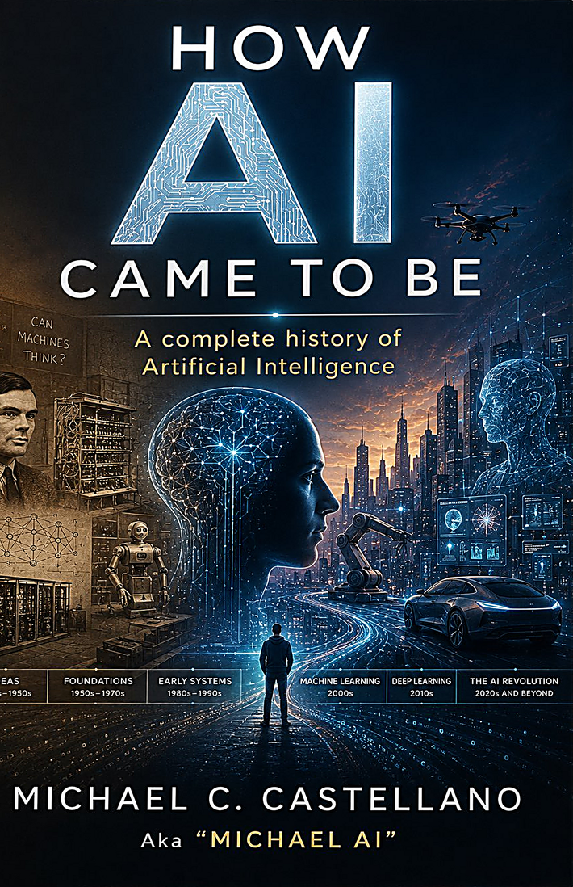

A complete history of artificial intelligence — from Alan Turing’s impossible question in 1950 to the machine that finally passed his test in real life.
The real story of the most important technology of our time.
This book is about humans learning to converse with machines — so it would be strange if you couldn’t converse with the book. Michael AI, the author’s virtual persona built on Engajer’s patented conversational technology, reads along with you, answers your questions, and goes deeper on any chapter.
Told by someone who lived it from the inside — not from a professor’s podium or a pundit’s desk.
Alan Turing’s question, Steve Jobs’s obsession with humanizing the computer, and the quiet decades of groundwork — the AI winters, the breakthroughs, the believers.
Engajer’s 2009 vision of human-machine conversation, ChatGPT’s explosion, Elon Musk’s empires, DeepSeek’s shockwave, and Anthropic’s conscience.
A clear-eyed forecast: the next 5 years, the next 50, and the century beyond — grounded in history, not hype. Plus what you should do about it.
Get the full first chapter free →Artificial intelligence, the buzzword of our time, did not appear suddenly out of nowhere. It did not emerge with a flick of a genius’s wrist or from the quiet of a lab filled with wires. The truth is more layered, more human, and far more fascinating.
What you are holding is not another cliché book about AI taking over the world. It is a story of ambition, chaos, struggle, and cooperation across industries, decades, and continents… Behind every breakthrough were teams of people who stayed up too late, ran out of money, argued over code, and believed in something the world was not ready to see.
Above all, it is a story about people.
— How AI Came to Be, Introduction
Join the list to get the free first chapter today, plus launch-day pricing, tour dates, and early access to the Michael AI reading companion.
No spam. Just the story, the launch, and the tour.